4. AWSサービスとの連携¶
Intel Edisonに接続された照度センサーのデータをAWSの各サービスにストアします。 EdisonはAWS IoTのトピックにデータをパブリッシュし、AWS IoTでルールに基づきDynamoDBへ保存します。

センサーデータは以下のJSONフォーマットとします。
{
"timestamp": "2015-10-24T14:16:37.305Z", ←ISO8601形式
"value": "300" ←アナログ値
}
4.1. DynamoDBのテーブル作成¶
センサーデータを保存するDynamoDBのテーブルを作成します。サービスメニューから”DynamoDB”をクリックし、DynamoDBの設定画面を開きます。
[Create Tables]をクリックします。
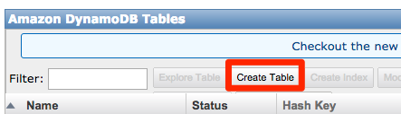“Create Table”の画面で以下の設定を入力し、[Continue]をクリックします。
| 設定項目 | 値 |
|---|---|
| テーブル名 | awsiot-handson-rawdata |
| プライマリキータイプ | Hash and Range |
| ハッシュキー属性値 | topic (String) |
| レンジキー属性値 | timestamp (String) |
“Add Indexes (Optional)”の画面でそのまま[Continue]をクリック。
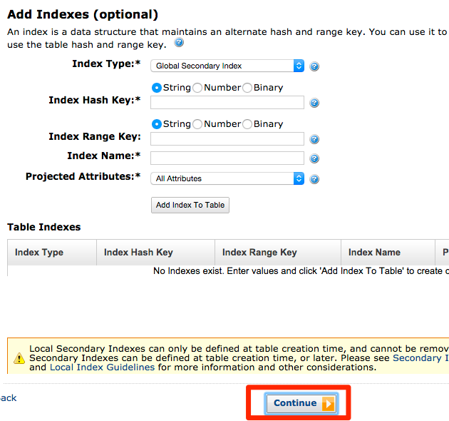“Provisioned Throughput Capacity”の画面でそのまま[Continue]をクリック。
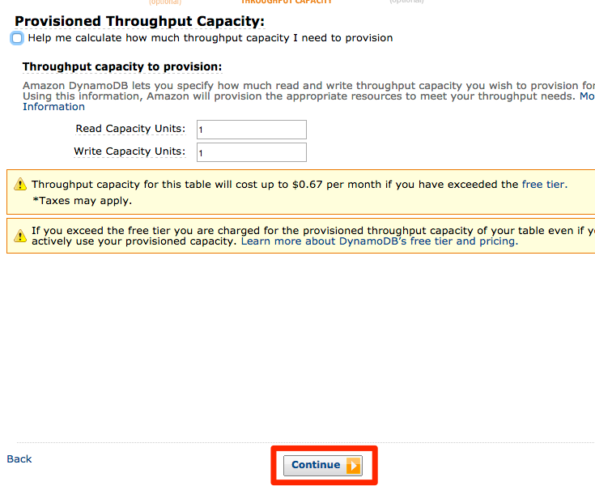“Use Basic Alarms”のチェックを外し、[Continue]をクリック。
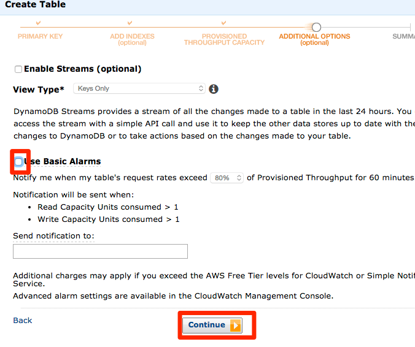内容を確認し、[Create]をクリック。
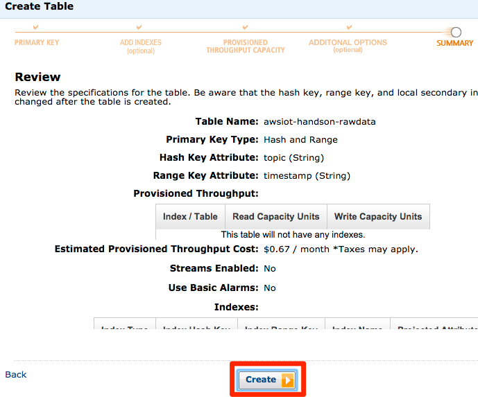リスト中に作成したテーブルが”CREATING”のステータスで表示されます。テーブルの作成までには少々時間がかかるため、次の手順に進んでください。
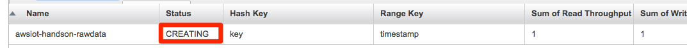4.2. AWS IoT ルールの作成¶
“Resources”の[Create a resource]をクリックします。
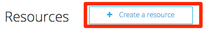[Create a rule]をクリックします。
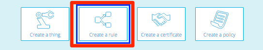スクリーンショットの赤枠で囲んだ部分について、以下の項目を入力します。
| 設定項目 | 値 |
|---|---|
| Name | SaveToDynamoDB |
| Description | 任意 |
| Attribute | *(アスタリスク) |
| Topic Filter | edison/illuminance |
画面をスクロールし、”Choose an action”から”Insert a message into a Database table(DynamoDB)”を選択します。以下の値を入力します。”Role Name”では[Create a new policy]をクリックします。
| 設定項目 | 値 |
|---|---|
| Hash Key Value | ${topic(2)} |
| Range Key Value | ${timestamp()} |
| Payload Field | value |
AWS IoTからDynamoDBへデータをPutするためのRoleを作成します。以下の画面で[Allow]をクリックします。
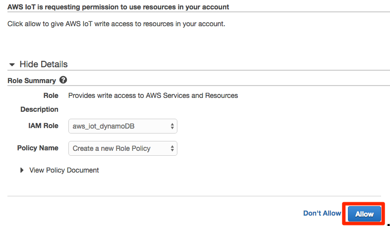[Add Action]をクリックします。
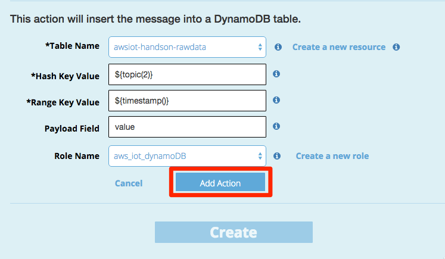“DynamoDB Action”が追加されたことを確認したら、[Create]をクリックします。
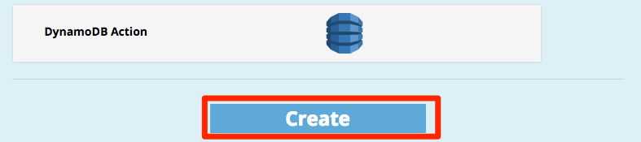一覧に作成したルールが作成されたことを確認します。
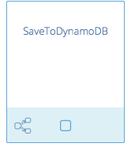4.3. プログラムの実行¶
照度センサーから照度データを取得し、AWS IoTのメッセージブローカーへ送信するためのプログラムを実行します。サンプルプログラム内のawsiot-handson-fundamentals配下のsensorに移動し、プログラムを実行します。
root@edison# cd awsiot-handson-fundamentals/sensor
root@edison# node main.js
Publish: {"timestamp":"2015-10-24T14:16:37.305Z","value":268}
Publish: {"timestamp":"2015-10-24T14:16:38.365Z","value":268}
Publish: {"timestamp":"2015-10-24T14:16:39.424Z","value":271}
Publish: {"timestamp":"2015-10-24T14:16:40.484Z","value":270}
Publish: {"timestamp":"2015-10-24T14:16:41.535Z","value":272}
Publish: {"timestamp":"2015-10-24T14:16:42.595Z","value":269}
Publish: {"timestamp":"2015-10-24T14:16:43.654Z","value":270}
DynamoDBのテーブルを確認し、データが格納されていることを確認してください。
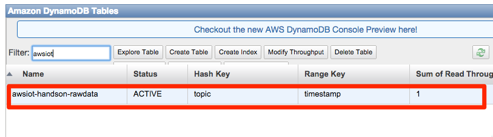